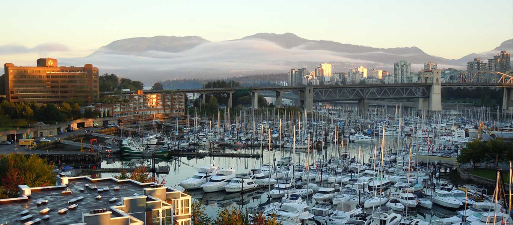
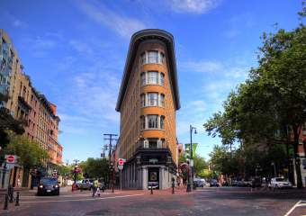

Vancouver
- 
- 
Vancouver was founded as “Gastown” by an Englishman with a penchant for beer and storytelling. Today Gastown is a historic section of the Canadian metropolis, and the lively pubs still reflect the area’s former status as a sort of community drinking center. The city’s forests, grand parks, and impressive suspension bridge beckon travelers to explore them, as do the city’s shops and museums. Relive the glory of the 2010 Winter Games with visits to Olympic venues and the marvelous Olympic Cauldron